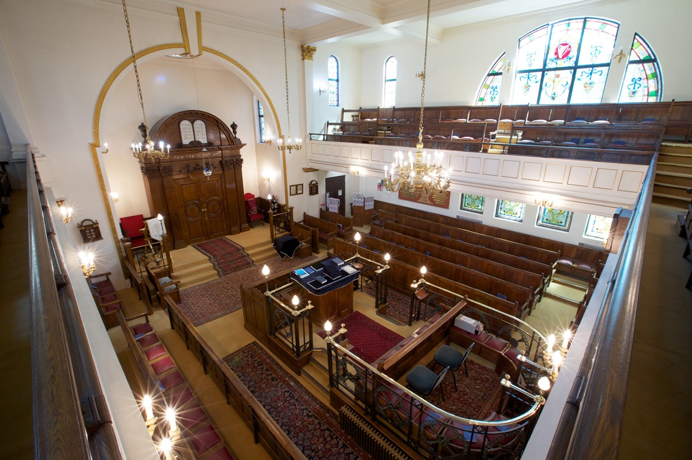

Some Information About Just Giving
Just Giving is a fundraising platform that allows individuals to raise money for charitable causes. By clicking the "Sponsor Me" button, a Just Giving page will open where you can make a donation to support my 100-mile cycling challenge for Holland Park Synagogue.
Fundraising processing fees 1.9% + £0.30 per donation for standard payment methods . 0-5% per donation for other payment methods Example If you raise £500 from 25 donors giving £20 each, the charity gets £483. Total raised: £500 | Fees: £17 (1.9% + 30p per donation)
A Little Bit About Just Giving Fees
Fundraising processing fees 1.9% + £0.30 per donation for standard
payment methods and 0-5% per donation for other payment methods.
Example
If we raise £500 from 25 donors giving £20 each, we receive £483.
If the total raised is £500 the fees are £17 (1.9% + 30p per donation)
It also means we do not have to getinvolved with the very complicated
business of debiting credit cards